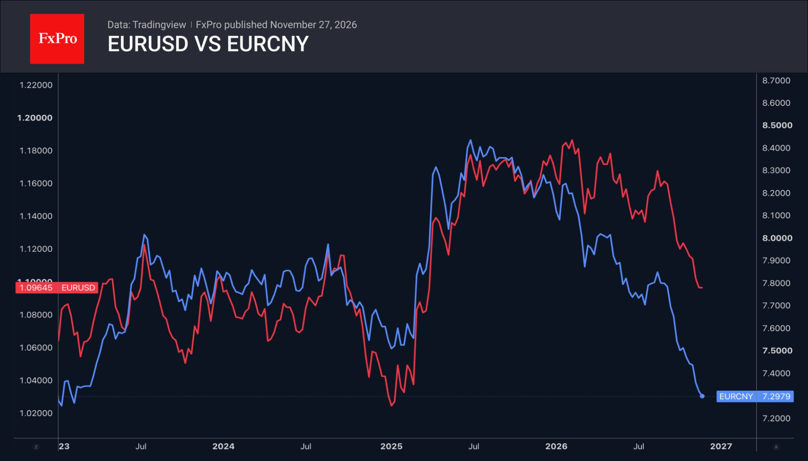

SEO
Meta Title: Will EURUSD climb back above 1.10?
Meta Description: EURUSD is at 1.0965 after the hawkish ECB account. In our view, without weakness in US stocks, a return above 1.10 remains in doubt.
Will EURUSD climb back above 1.10?
- Hawkish rhetoric in the accounts of ECB’s October meeting is supporting the euro.
- The reopening of the stock market after the holiday could send currencies in different directions.
The US dollar has lost its main driver. US stock markets were closed for Thanksgiving, and equity index performance has determined the greenback's fate in recent days. A post-holiday rally could support higher-yielding currencies such as the Australian and New Zealand dollars. Conversely, a further correction in the S&P 500 would be a reason to return to the yen and the Swiss franc. The impressive rise in US index futures may prove deceptive, so it is better to wait for regular trading in the US session.
That said, interest in the greenback is driven by more than US equities and artificial intelligence. A strong economy, accelerating inflation and the Fed's determination to keep tightening monetary policy are providing tailwinds for the US dollar. It is on course for a third straight monthly gain, its longest winning streak since late 2024.
The euro will face difficulties due to French politics and doubts as to whether the ECB will be able to raise interest rates after December. In the account of the Governing Council's October meeting, officials deemed a December rate hike necessary if inflation did not slow down. Consumer prices, however, have accelerated.
However, the ECB's next moves are not so clear-cut. This is particularly true following the nomination of Pablo Hernández de Cos as the next President of the ECB. The Spaniard has previously described himself as an "owl", preferring to make decisions based on data. He does not consider himself to be either a hawk or a dove.
The widening of the EU's trade deficit with China is putting pressure on EURUSD, and this has been a key factor behind the euro's weakest performance against the yuan in two decades, between January and November. Meanwhile, Berlin believes the renminbi is still undervalued by approximately 30%.
The sell-off in EURUSD is also being fuelled by Brent heading for its first weekly gain in a month. The oil market has been rattled by rising tensions in the Middle East. If an escalation of the conflict reduces exports from the region, the North Sea benchmark risks climbing further. That would increase the risk of high inflation becoming entrenched in the US and force the Fed to accelerate its tightening cycle.
What to watch
Base case: in our view, the strong US economy and a hawkish Fed keep tailwinds behind the dollar, and a return of EURUSD above 1.10 would require a continued correction in US equities.
Risk: consolidation above 1.10 and then above 1.12 would signal a reversal to the upside, while a break below 1.0880 (the lowest since April 2025) would open the way to a further decline.
Upcoming: euro area CPI and ISM on 1 December; NFP on 4 December; the Fed decision on 9 December. Check the economic calendar for more events.
The FxPro Analyst Team
Charts

Source: TradingView, as of 27 November 2026.
Alt text: Line chart from 2023 to November 2026: AUDUSD (red line, right scale) at 0.6668 and the Nasdaq-100 index (blue line, left scale) at 26,695, both down from their autumn peaks.

Source: TradingView, as of 27 November 2026.
Alt text: Line chart from 2023 to November 2026: EURUSD (red line, left scale) at 1.09645 and EURCNY (blue line, right scale) at 7.2979 after a sharp decline since mid-2025.
Links
- equity index performance → "Commodity currencies part ways", 25.11.2026 → https://fxpro.news/market-overview/commodity-currencies-part-ways/
- Australian → AUDUSD (instrument page) → https://fxpro.news/quotes/audusd/
- French politics → "EURUSD is ready to rally, but the outlook is worrying", 26.11.2026 → https://fxpro.news/market-overview/eurusd-is-ready-to-rally-but-the-outlook-is-worrying/
- EURUSD (instrument page) → https://fxpro.news/quotes/eurusd/
- Brent (instrument page) → https://fxpro.news/quotes/brent/
- the North Sea benchmark → "Is oil heading towards $70 a barrel?", 24.11.2026 → https://fxpro.news/tech-analysis/is-oil-heading-towards-70-a-barrel/
- further decline → "Weekly round-up: dollar retreats from its high…", 26.11.2026 → https://fxpro.news/market-overview/weekly-round-up-dollar-retreats-from-its-high-sp-500-and-gold-try-to-find-a-bottom-money-flees-bitcoin/
- Check the economic calendar for more events. → https://fxpro.news/economic-calendar/